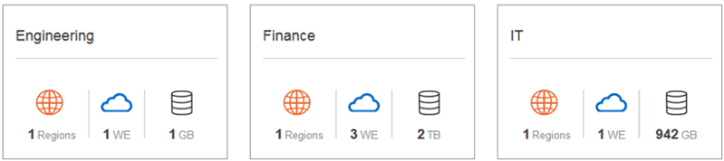

Die neueste Version finden Sie in den Dokumenten.
Storage-Management
Mitwirkende Laden Sie dieses Thema als PDF herunter
Laden Sie dieses Thema als PDF herunter
Cloud Manager ermöglicht ein vereinfachtes und erweitertes Management von Cloud Volumes ONTAP Storage.
| Alle Festplatten und Aggregate müssen direkt aus Cloud Manager erstellt und gelöscht werden. Sie sollten diese Aktionen nicht über ein anderes Management-Tool ausführen. Dies kann sich auf die Systemstabilität auswirken, die Fähigkeit zum Hinzufügen von Festplatten in der Zukunft beeinträchtigen und möglicherweise Kosten für redundante Cloud-Provider verursachen. |
Storage-Bereitstellung
Cloud Manager vereinfacht die Storage-Provisionierung für Cloud Volumes ONTAP durch den Kauf von Festplatten und das Management von Aggregaten. Sie müssen einfach Volumes erstellen. Sie können bei Bedarf eine erweiterte Zuweisungsoption verwenden, um Aggregate selbst bereitzustellen.
Vereinfachte Bereitstellung
Aggregate stellen Cloud-Storage für Volumes bereit. Cloud Manager erstellt Aggregate für Sie, wenn Sie eine Instanz starten und wenn Sie zusätzliche Volumes bereitstellen.
Wenn Sie ein Volume erstellen, führt Cloud Manager eine der drei folgenden Aufgaben aus:
-
Das Volume wird auf einem vorhandenen Aggregat platziert, das über ausreichend freien Speicherplatz verfügt.
-
Das Volume wird auf einem vorhandenen Aggregat platziert, indem mehr Festplatten für dieses Aggregat erworben werden.
-
Es kauft Festplatten für ein neues Aggregat und platziert das Volume auf diesem Aggregat.
Cloud Manager bestimmt, wo ein neues Volume platziert werden soll, indem er verschiedene Faktoren betrachtet: Die maximale Größe eines Aggregats, die Aktivierung von Thin Provisioning und die Schwellenwerte für freien Speicherplatz für Aggregate.
| Der Cloud Manager Admin kann die Schwellenwerte für freien Speicherplatz auf der Seite Einstellungen ändern. |
Auswahl der Festplattengröße für Aggregate in AWS
Wenn Cloud Manager neue Aggregate für Cloud Volumes ONTAP in AWS erstellt, erhöht sich die Festplattengröße in einem Aggregat allmählich, wenn die Anzahl der Aggregate im System steigt. Cloud Manager sorgt so dafür, dass Sie die maximale Kapazität des Systems nutzen können, bevor die maximale Anzahl von Datenfestplatten erreicht wird, die von AWS zugelassen werden.
Cloud Manager kann beispielsweise die folgenden Festplattengrößen für Aggregate in einem Cloud Volumes ONTAP Premium oder Byol System wählen:
| Aggregatnummer | Festplattengröße | Max. Gesamtkapazität |
|---|---|---|
1 |
500 MB |
3 TB |
4 |
1 TB |
6 TB |
6 |
2 TB |
12 TB |
Sie können die Festplattengröße selbst mithilfe der erweiterten Zuweisungsoption auswählen.
Erweiterte Zuweisung
Anstatt Cloud Manager Aggregate für Sie verwalten zu lassen, können Sie dies selbst tun. Auf der Seite Erweiterte Zuweisung können Sie neue Aggregate erstellen, die eine bestimmte Anzahl von Festplatten enthalten, einem vorhandenen Aggregat Festplatten hinzufügen und Volumes in bestimmten Aggregaten erstellen.
Kapazitätsmanagement
Der Cloud Manager Admin kann wählen, ob Cloud Manager Sie über Entscheidungen zur Storage-Kapazität benachrichtigt oder ob Cloud Manager automatisch die Kapazitätsanforderungen für Sie managt. Es könnte Ihnen dabei helfen, die Funktionsweise dieser Modi zu verstehen.
Automatisches Kapazitätsmanagement
Wenn der Cloud Manager Admin den Capacity Management-Modus auf "Automatisch" setzt, erwirbt Cloud Manager automatisch neue Festplatten für Cloud Volumes ONTAP Instanzen, wenn mehr Kapazität benötigt wird, löscht ungenutzte Festplattensammlungen (Aggregate) und verschiebt Volumes nach Bedarf zwischen Aggregaten.
Die folgenden Beispiele veranschaulichen die Funktionsweise dieses Modus:
-
Wenn ein Aggregat mit 5 oder weniger EBS-Festplatten den Kapazitätsschwellenwert erreicht, kauft Cloud Manager automatisch neue Festplatten für dieses Aggregat, damit Volumes weiter wachsen können.
-
Wenn ein Aggregat mit 12 Azure Disks den Kapazitätsschwellenwert erreicht, verschiebt Cloud Manager automatisch ein Volume von diesem Aggregat in ein Aggregat mit verfügbarer Kapazität oder in ein neues Aggregat.
Beachten Sie, dass jetzt freier Speicherplatz auf dem ursprünglichen Aggregat verfügbar ist. Vorhandene Volumes oder neue Volumes können diesen Speicherplatz nutzen. Der Speicherplatz kann in diesem Szenario nicht an AWS oder Azure zurückgegeben werden.
-
Wenn ein Aggregat mehr als 12 Stunden lang keine Volumes enthält, löscht Cloud Manager es.
Manuelles Kapazitätsmanagement
Wenn der Cloud Manager Admin den Capacity Management-Modus auf "Manuell" setzt, zeigt Cloud Manager bei Kapazitätsentscheidungen Meldungen mit dem Status "Aktion erforderlich" an. Die gleichen Beispiele, die im automatischen Modus beschrieben werden, gelten für den manuellen Modus, aber Sie müssen die Aktionen akzeptieren.
Storage-Isolierung mithilfe von Mandanten
Mit Cloud Manager können Sie Storage in isolierten Gruppen, so genannten Mandanten, bereitstellen und managen. Sie müssen entscheiden, wie Cloud Manager-Benutzer und ihre Arbeitsumgebungen über Mandanten hinweg organisiert werden.
Arbeitsumgebungen
Cloud Manager repräsentiert Storage-Systeme als Arbeitsumgebungen . Eine Arbeitsumgebung hat folgende Eigenschaften:
-
Ein einzelnes Cloud Volumes ONTAP System oder ein HA-Paar
-
Ein On-Premises ONTAP Cluster in Ihrem Netzwerk
-
Ein ONTAP Cluster in einer NetApp Private Storage-Konfiguration
Das folgende Bild zeigt eine Cloud Volumes ONTAP Arbeitsumgebung:

Mandanten
Ein Mandant isoliert Arbeitsumgebungen in Gruppen. Sie erstellen eine oder mehrere Arbeitsumgebungen innerhalb eines Mandanten. Das folgende Bild zeigt drei Mandanten, die in Cloud Manager definiert sind:

Benutzerverwaltung von Mandanten und Arbeitsumgebungen
Die Mandanten und Arbeitsumgebungen, die Cloud Manager-Benutzer managen können, hängen von der Benutzerrolle und den Zuweisungen ab. Die drei unterschiedlichen Benutzerrollen sind:
- Cloud Manager Admin
-
Verwaltet das Produkt und kann auf alle Mandanten und Arbeitsumgebungen zugreifen.
- Mandantenverwaltung
-
Verwaltet einen einzelnen Mandanten. Kann alle Arbeitsumgebungen und Benutzer im Mandanten erstellen und verwalten.
- Administrator der Arbeitsumgebung
-
Kann eine oder mehrere Arbeitsumgebungen in einem Mandanten erstellen und managen.
Beispiel für das Erstellen von Mandanten und Benutzern
Wenn Ihr Unternehmen Abteilungen hat, die unabhängig voneinander arbeiten, ist es am besten, einen Mandanten für jede Abteilung zu haben.
Sie können beispielsweise drei Mandanten für drei separate Abteilungen erstellen. Anschließend erstellen Sie für jeden Mandanten einen Tenant Admin. Innerhalb jedes Mandanten wären ein oder mehrere Working Environment Admins, die Arbeitsumgebungen managen. Das folgende Bild zeigt dieses Szenario:

Warum sollten Sie einen Mandanten mit Ihrem NetApp Support Site-Konto verknüpfen
Cloud Manager fordert Sie auf, die Anmeldedaten der NetApp Support Site für einen Mandanten einzugeben, da sie die Anmeldedaten zum Managen von Lizenzen für Cloud Volumes ONTAP Byol Systeme, zur Registrierung von nutzungsbasierten Instanzen für den Support und zum Upgrade der Cloud Volumes ONTAP Software verwendet.
Sehen Sie sich das folgende Video an, um weitere Informationen über die Bereitstellung Ihrer NetApp Support Site Zugangsdaten für Cloud Manager zu erhalten.
Detaillierte Anweisungen und Anforderungen für NetApp Support Site-Konten finden Sie unter Verknüpfen von Mandanten mit einem NetApp Support Site-Konto .
Weitere Informationen zum Verwalten von Lizenzdateien in Cloud Manager finden Sie unter Lizenzierung .
Vereinfachtes Storage-Management mit der Volume-Ansicht
Cloud Manager bietet eine separate Managementansicht mit dem Namen Volume View , die das Storage-Management in AWS weiter vereinfacht.
Mit der Volume-Ansicht können Sie einfach die NFS-Volumes angeben, die Sie in AWS benötigen, und dann erledigt Cloud Manager den Rest: Cloud Volumes ONTAP Systeme werden nach Bedarf bereitgestellt, und die Kapazitätszuweisung wird bei wachsenden Volumes entschieden. Diese Ansicht bietet Ihnen die Vorteile von Storage der Enterprise-Klasse in der Cloud mit sehr geringem Storage-Management.
Die folgende Abbildung zeigt die Interaktion mit Cloud Manager in der Volume-Ansicht:

-
Sie erstellen NFS-Volumes.
-
Cloud Manager startet Cloud Volumes ONTAP Instanzen in AWS für neue Volumes oder erstellt Volumes auf vorhandenen Instanzen. Darüber hinaus wird physischer EBS Storage für die Volumes erworben.
-
Sie stellen die Volumes Ihren Hosts und Applikationen zur Verfügung.
-
Cloud Manager trifft Entscheidungen zur Kapazitätszuweisung, wenn Ihre Volumes wachsen.
Das bedeutet, dass Sie lediglich mit Volumes (das Bild links) interagieren müssen, während Cloud Manager mit dem Speichersystem und dem zugrunde liegenden Storage (das Bild rechts) interagiert.
Zuweisung von Cloud-Ressourcen für das anfängliche Volume
Wenn Sie Ihr erstes Volume erstellen, startet Cloud Manager eine Cloud Volumes ONTAP Instanz oder ein Cloud Volumes ONTAP HA Paar in AWS und kauft Amazon EBS Storage für das Volume:

Die Größe des initialen Volumes bestimmt den EC2-Instanztyp und die Anzahl der EBS-Festplatten.
| Cloud Manager startet eine Cloud Volumes ONTAP Explore- oder Standardinstanz, je nach anfänglicher Volume-Größe. Wenn die Volumes wachsen, werden Sie möglicherweise von Cloud Manager aufgefordert, eine AWS-Instanzänderung vorzunehmen. Dies bedeutet, dass die Lizenz der Instanz auf Standard oder Premium aktualisiert werden muss. Durch ein Upgrade wird die EBS-Rohkapazitätsgrenze erhöht, sodass Ihre Volumes wachsen können. |
| Cloud Manager startet Cloud Volumes ONTAP Byol Instanzen nicht in der Volume View. Sie sollten Cloud Manager in der Storage System View verwenden, wenn Sie eine Cloud Volumes ONTAP Lizenz erworben haben. |
Zuweisung von Cloud-Ressourcen für zusätzliche Volumes
Wenn Sie zusätzliche Volumes erstellen, erstellt Cloud Manager die Volumes auf vorhandenen Cloud Volumes ONTAP Instanzen oder auf neuen Cloud Volumes ONTAP Instanzen. Cloud Manager kann ein Volume auf einer vorhandenen Instanz erstellen, wenn der AWS-Speicherort und der Festplattentyp der Instanz mit dem angeforderten Volume übereinstimmen und genügend Speicherplatz vorhanden ist.
NetApp Storage-Effizienzfunktionen und Storage-Kosten
Cloud Manager aktiviert automatisch NetApp Storage-Effizienzfunktionen auf allen Volumes. Durch diese Effizienzsteigerungen können Sie die benötigte Storage-Gesamtmenge reduzieren. Möglicherweise unterscheiden sich Ihre zugewiesene Kapazität und die erworbene AWS-Kapazität, was zu Einsparungen bei den Storage-Kosten führen kann.
Entscheidungen zur Kapazitätszuweisung, die Cloud Manager automatisch übernimmt
-
Cloud Manager erwirbt zusätzliche EBS-Festplatten, wenn Kapazitätsschwellenwerte überschritten werden. Dies geschieht, wenn Ihre Volumes wachsen.
-
Cloud Manager löscht ungenutzte Sätze von EBS-Festplatten, wenn die Festplatten 12 Stunden lang keine Volumes enthalten.
-
Cloud Manager verschiebt Volumes zwischen Festplattensätzen, um Kapazitätsprobleme zu vermeiden.
In einigen Fällen ist der Erwerb zusätzlicher EBS-Festplatten erforderlich. Außerdem wird Speicherplatz auf dem ursprünglichen Satz von Festplatten für neue und vorhandene Volumes freigegeben.
 Im GitHub
Im GitHub